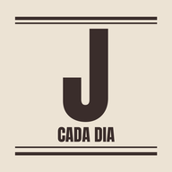
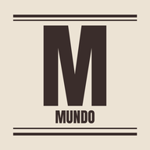
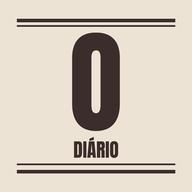
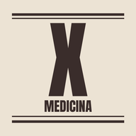
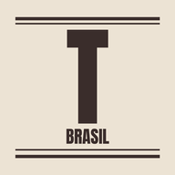
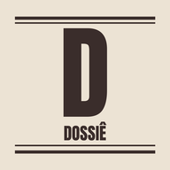

Xeque News
5 jornais✱Edição todo dia✱14/11/2026
Escolha o seu jornal
Toque num jornal para ler a edição de hoje.
Quatro jornais em abasMundo, Brasil, Lafaiete e MedicinaO Observatório, o Terra Brasilis, O Carijó e o Xeque-Mate num lugar só. Troque de jornal pelas abas no alto.
›

Edição de 13 de novembroJornal de Cada DiaLeitura fácil para a família: o Brasil e o mundo em linguagem simples, mais o caderno de Conselheiro Lafaiete.Supremo mantém a jornada menor para dezembro
›

Edição de 13 de novembroDo Mundo a LafaieteO Observatório completo, com geopolítica, guerras, energia, IA e espaço, mais o caderno de Conselheiro Lafaiete.Trump dispensa o acordo com o Irã
›

Edição de 13 de novembroObservatório DiárioO mundo para estudar (geopolítica, guerras, energia, clima, IA e espaço, com história e filosofia) e o caderno do Brasil. Ao abrir, escolha Mundo + Brasil ou Apenas Brasil.Trump dispensa o acordo com o Irã
›

Edição de 14 de novembroXeque-MateSó medicina, para estudantes: estudos, ensaios clínicos, aprovações e saúde pública.Estimular pelo ramo esquerdo.
›

Edição de 13 de novembroTerra BrasilisO Brasil e Minas Gerais: Brasília, o seu bolso, saúde, escola e Minas. Toda notícia diz como afeta o trabalhador e cada classe.Jornada de 42 horas começa em 16 de dezembro; STF decide até segunda se confirma
›
Dossiês de estudo

O Caso Moraes–Vorcaro Dossiê de estudo: por que um ministro do STF citado no caso Banco Master continua no cargo.
Fontes e compromisso editorial
Sem partido, com fonte Todos os jornais seguem a mesma linha: nenhum vínculo com partido ou governo, fato separado de opinião, os dois lados, cada notícia com fonte, link e data, e erros corrigidos às claras. Veja as fontes de cada jornal.
"Cada página impressa aproximava o mundo"
Para ter o Xeque News como aplicativo no celular: no Android, abra no Chrome, toque nos três pontinhos e em "Instalar app" ou "Adicionar à tela inicial"; no iPhone, abra no Safari, toque em Compartilhar e em "Adicionar à Tela de Início". Depois da primeira visita, os jornais abrem até sem internet. Textos escritos com a ajuda do Claude, IA da Anthropic; não substituem orientação médica.